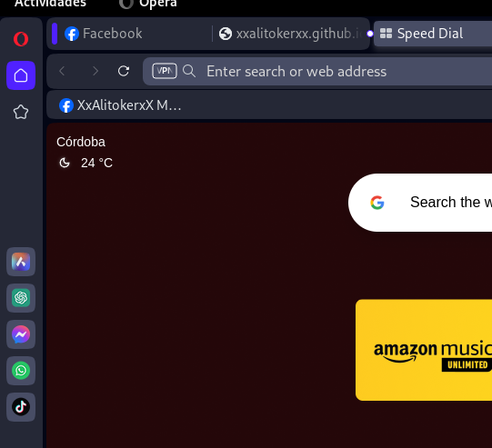

XxAlitokerxX Mi Cueva Digital: Donde Tú Eres la Inspiración
üöÄ ChatGPT en el Sidebar de Opera: Tu Asistente Virtual Amigable ü§ñ
¡Hola a todos! Hoy te voy a mostrar cómo aprovechar ChatGPT en el sidebar de Opera para obtener respuestas a tus preguntas y mejorar tu productividad.
Paso 1: Abre tu navegador Opera üåê
Si aún no tienes Opera, puedes descargarlo desde el sitio web oficial de Opera. Instálalo y ejecútalo en tu dispositivo.
Paso 2: Accede a las Opciones de Opera ⚙️
En Opera, ve a la esquina superior derecha y haz clic en el icono de menú (tres líneas horizontales). Luego, selecciona "Configuración" en el menú desplegable.
Paso 3: Activa el Sidebar de Opera üó®Ô∏è
Dentro de la configuración de Opera, busca la sección "Navegación" en el menú de la izquierda y selecciona "Barra lateral". Asegúrate de que la opción "Habilitar la barra lateral" esté marcada.
Paso 4: Agrega ChatGPT al Sidebar üöÄ
Ahora, en la misma sección de la barra lateral, desplázate hacia abajo hasta encontrar la opción "Gestión de paneles". Haz clic en "Añadir un sitio web" y escribe "ChatGPT". Esto creará un acceso directo a ChatGPT en el sidebar de Opera.
Paso 5: Comienza a Chatear üí¨
Ve al sidebar de Opera y verás el acceso directo a ChatGPT. Haz clic en él y se abrirá la plataforma de ChatGPT en el sidebar. ¡Estás listo para comenzar! Escribe cualquier pregunta o solicitud que tengas en el cuadro de chat y presiona Enter para obtener una respuesta de ChatGPT.
Paso 6: Explora las Funciones üßê
ChatGPT es muy versátil. Puedes preguntar sobre cualquier tema, obtener recomendaciones, escribir código o incluso generar texto creativo. Experimenta y descubre todas sus funciones directamente desde el sidebar de Opera.
Paso 7: Guarda tus Conversaciones (Opcional) üíæ
Opera te permite guardar tus conversaciones en línea. Para hacerlo, simplemente selecciona el texto de la conversación en el sidebar de Opera, haz clic derecho y elige "Guardar como". Luego, elige la ubicación donde deseas guardar el archivo.
Paso 8: ¡Disfruta de la Ayuda de ChatGPT! üéâ
¡Ahora estás listo para aprovechar al máximo ChatGPT en Opera directamente desde el sidebar! Recuerda que no es necesario ser un genio para ser inteligente. La inteligencia radica en saber aprovechar todas las herramientas a tu alcance. No hace falta ser Einstein. ¡Divi√©rtete explorando y obteniendo respuestas a tus preguntas! üòÉ
Recuerda que ChatGPT es una herramienta poderosa, as√≠ que úsala con responsabilidad y divi√©rtete aprendiendo y descubriendo nuevas cosas. ¡Nos vemos en la Cueva Digital! üëã
si te a ayudado y gustado deja tu comentario Aqui!!!Gracias ‚ù§Ô∏èüëçÔ∏è